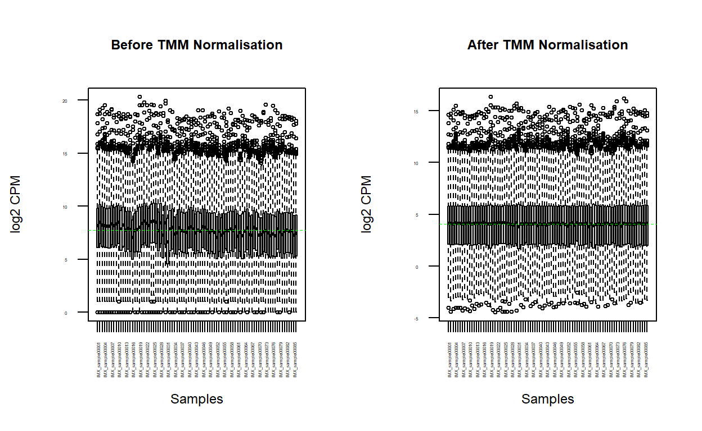
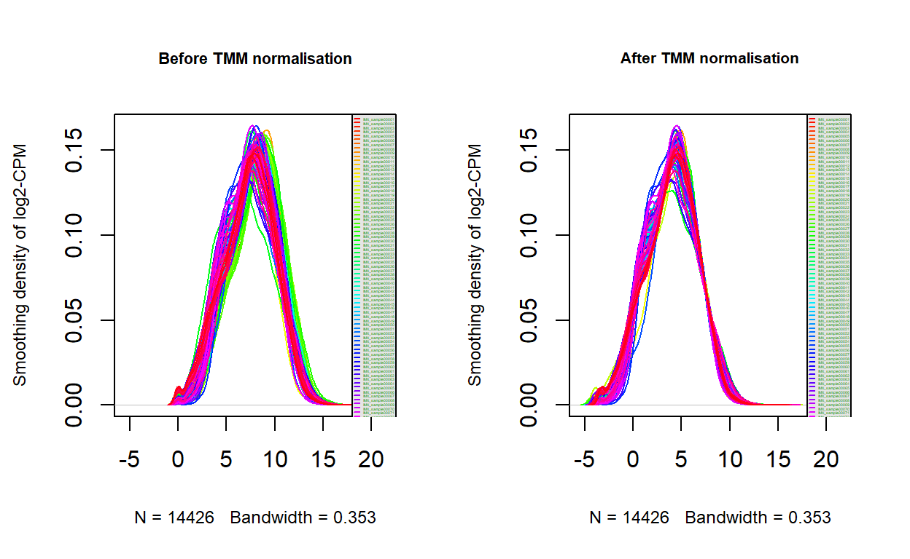
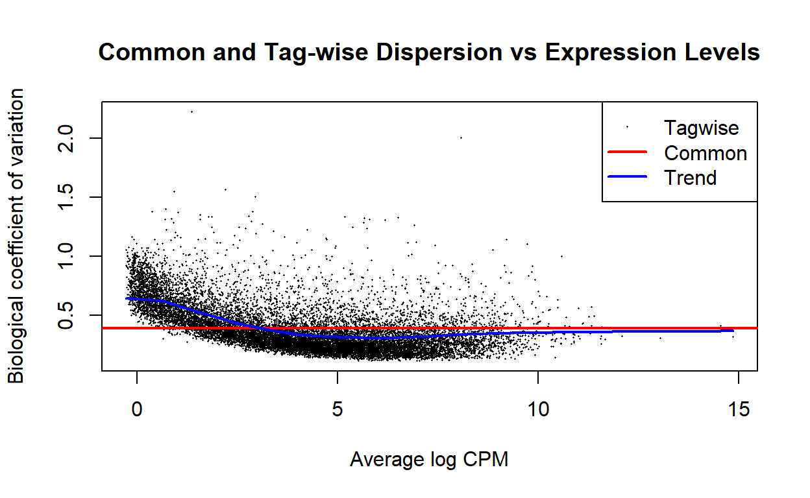
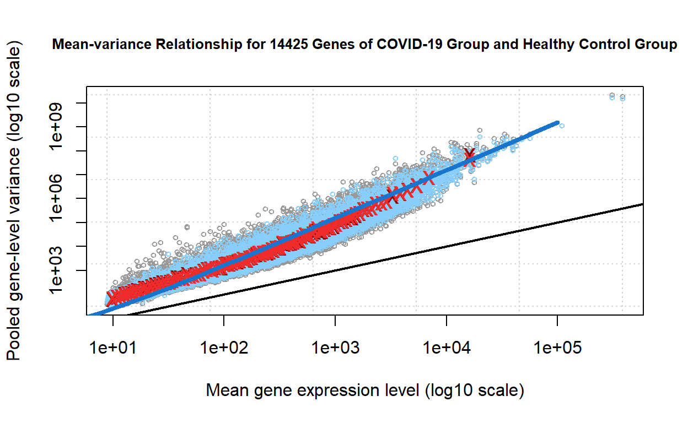
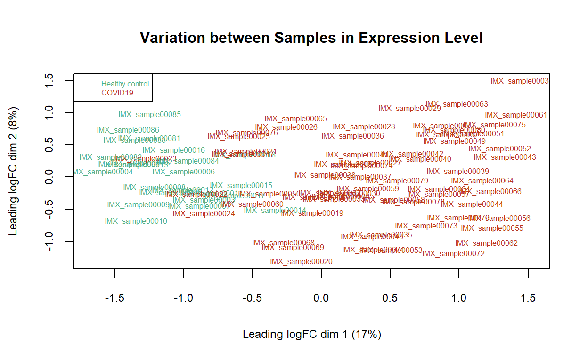

A walkthrough of processing bulk RNA-seq data from the GEO database purely in R.
This article demonstrates a pure R workflow of finding experiments of interest, downloading datasets of experiments of interest from the Gene Expression Omnibus (GEO) database, and processing the bulk RNA-seq counts data.
The readers are assumed to have certain degree of understanding of what the GEO database is.
GEOmetadb is a thin wrapper around a SQLite database into which all the most up-to-date NCBI GEO metadata that are associated with GEO samples (GSM), GEO platforms (GPL), GEO data series (GSE), and curated GEO datasets (GDS) are parsed.(Zhu et al. 2008) It enables querying the GEO database using R scripts without accessing the webpage. Although NCBI’s public API to the NCBI Entrez system The E-utilities also also offers an option for scripting queries for finding datasets of interest in the GEO database, the E-utilities are difficult to use (e.g. might need HTTP POST calls for long queries) and require extra effort to learn.
To install GEOmetadb via Bioconductor:
if (!requireNamespace("GEOmetadb", quietly = TRUE))
BiocManager::install("GEOmetadb", ask = FALSE)
We will also create a directory ./data dedicated to storing data files under the working directory:
if(!dir.exists("./data")) {
dir.create("./data", showWarnings = FALSE)
}
Then we download the SQLite database that has the GEO metadata into ./data via GEOmetadb:
# Download GEOmeta database if not found
metadb <- file.path(".", "data", "GEOmetadb.sqlite")
if(!file.exists(metadb)) {
## avoid re-downloading the 11G database everytime running the script
metadb <- GEOmetadb::getSQLiteFile(destdir = "./data")
}
For this demonstration, we are interested in experiments that:
To build an query to find experiments that meet the above conditions:
query <- paste(
"SELECT DISTINCT",
"gse.title,",
"gse.gse,",
"gpl.title AS platform,",
"gse.submission_date,",
"gse.supplementary_file",
"FROM",
"gse",
"JOIN gse_gpl ON gse_gpl.gse = gse.gse",
"JOIN gpl ON gse_gpl.gpl = gpl.gpl",
"WHERE",
"gse.submission_date > '2015-01-01' AND", # not older than 6 years
"gse.title LIKE '%SARS-CoV-2%' AND ", # experiment on COVID
"gpl.organism LIKE '%Homo sapiens%' AND", # dataset of human cells or tissue
"gpl.technology LIKE '%high-throughput seq%'") # RNA-seq data
The ER diagram for the GEOmetadb SQLite database is represented as the following. This might come in useful when constructing an SQL statement querying the database.
For the GEO accession prefixes present in the figure:
GSE: Series
GSM: Sample
GPL: Platform
GDS: DataSet
To establish a connection with the SQLite database:
Note that packages DBI and RSQLite have already been implicitly installed as dependencies for GEOmetadb. Therefore we can directly make the function calls here.
To submit the query to the database:
result <- DBI::dbGetQuery(conn = con, statement = query) ## save query result
Closing connection to the database:
DBI::dbDisconnect(con) ## close connection
rm(con) ## not a necessary step, just wanna keep my workspace clean
The SQL query result is returned as a list object by the wrapper function in R. The result should have the following columns:
names(result)
[1] "title" "gse" "platform"
[4] "submission_date" "supplementary_file"We would like to select from only those experiments whose datasets contain RNA-seq count matrices:
hasCounts <- result$supplementary_file[
grep(
result$supplementary_file,
pattern = "count", ## keyword to look for in experiment data files
ignore.case = TRUE
)
]
This extracts a vector of FTP links to the files that include RNA-seq counts. Then from the FTP links, we extract the GSE series numbers from their file names using regex:
hasCounts_gse <- unlist(
regmatches(hasCounts,
regexec("GSE[0-9]{4,}[^/]", hasCounts)
)
)
SELECT_ROWS <- result$gse %in% hasCounts_gse
candidate_dataset <- result[SELECT_ROWS, ]
The GSE series numbers and titles of the qualified candidate experiments (candidate_dataset) that contain RNA-seq data are as follows:
| title | gse | |
|---|---|---|
| 1 | Transcriptional response of human lung epithelial cells to SARS-CoV-2 infection | GSE147507 |
| 2 | SARS-CoV-2 receptor ACE2 is an interferon-stimulated gene in human airway epithelial cells and is detected in specific cell subsets across tissues | GSE148829 |
| 3 | SARS-CoV-2 receptor ACE2 is an interferon-stimulated gene in human airway epithelial cells and is detected in specific cell subsets across tissues | GSE148829 |
| 5 | Spectrum of Viral Load and Host Response Seen in Autopsies of SARS-CoV-2 Infected Lungs | GSE150316 |
| 9 | RNA-Seq of Human iPSC-cardiomyocytes infected with SARS-CoV-2 | GSE150392 |
| 10 | In vivo antiviral host response to SARS-CoV-2 by viral load, sex, and age | GSE152075 |
| 12 | Severely ill COVID-19 patients display a defective exhaustion program in SARS-CoV-2 reactive CD8+ T cells | GSE153931 |
| 13 | Primary Human Airway Epithelial Cultures infected with SARS-CoV-2 | GSE153970 |
| 14 | In vivo antiviral host response to SARS-CoV-2 by viral load, sex, and age [dataset II] | GSE154768 |
| 15 | In vivo antiviral host response to SARS-CoV-2 by viral load, sex, and age [dataset III] | GSE154769 |
| 22 | Upper airway gene expression differentiates COVID-19 from other acute respiratory illnesses and reveals suppression of innate immune responses by SARS-CoV-2 | GSE156063 |
| 24 | Acute SARS-CoV-2 Infection in a Universal In Vivo Model for Potential Human Pandemic Coronaviruses is Cytopathic and Elicits a Robust and Sustained Host Innate Immune Response | GSE155286 |
| 25 | Human Pluripotent Stem Cell-Derived Neural Cells and Brain Organoids Reveal SARS-CoV-2 Neurotropism Predominates in Choroid Plexus Epithelium | GSE157852 |
| 28 | Expression of SARS-CoV-2 receptor ACE2 and coincident host response signature varies by asthma inflammatory phenotype | GSE158752 |
| 30 | SARS-CoV-2 infected cells present HLA-I peptides from canonical and out-of-frame ORFs | GSE159191 |
| 31 | SARS-CoV-2 infected cells present HLA-I peptides from canonical and out-of-frame ORFs | GSE159191 |
| 34 | Cardiomyocytes Infected by SARS-CoV-2 Recruit Cardiotoxic Macrophages [bulk RNA-seq dataset) | GSE151879 |
| 35 | Cardiomyocytes Infected by SARS-CoV-2 Recruit Cardiotoxic Macrophages [bulk RNA-seq dataset) | GSE151879 |
| 42 | Identification of required host factors for SARS-CoV-2 infection in human cells [RNA-seq] | GSE159522 |
| 44 | SARS-CoV-2 infection of primary human lung epithelium for COVID-19 modeling and drug discovery | GSE155518 |
| 48 | Temporal and Spatial Heterogeneity of Host Response to SARS-CoV-2 Pulmonary Infection [gene expression] | GSE159787 |
| 53 | Single Nucleus RNA-Seq Multiomic Profiling Reveals Age-Dynamic Regulation of Host Genes Associated with SARS-CoV-2 Infection [scRNA-Seq] | GSE161382 |
| 56 | Genome-scale identification of SARS-CoV-2 and pan-coronavirus host factor networks | GSE162038 |
| 57 | Functional interrogation of a SARS-CoV-2 host protein interactome identifies unique and shared coronavirus host factors | GSE162039 |
| 58 | Metabolic reprogramming and epigenetic changes of vital organs in SARS-CoV-2 induced systemic toxicity | GSE162113 |
| 59 | Infection of human Nasal Epithelial Cells with SARS-CoV-2 and a 382-nt deletion isolate lacking ORF8 reveals similar viral kinetics and host transcriptional profiles | GSE162131 |
| 63 | Transcriptomic Similarities and Differences in Host Response between SARS-CoV-2 and Other Viral Infection | GSE152641 |
| 64 | Bulk RNA sequencing of SARS-CoV-2 infected alveolar type I- and type II like cells | GSE153218 |
| 73 | Identification of Drugs Blocking SARS-CoV-2 Infection using Human Pluripotent Stem Cell-derived Colonic Organoids | GSE148696 |
| 74 | Response to SARS-CoV-2 infection in cornea, limbus and sclera from human donors | GSE164073 |
| 76 | Dysregulated transcriptional responses to SARS-CoV-2 in the periphery support novel diagnostic approaches | GSE161731 |
| 78 | A Multiplexed, Next-Generation Sequencing Platform for High-Throughput Detection of SARS-CoV-2 [PoC cohort] | GSE160031 |
| 79 | A Multiplexed, Next-Generation Sequencing Platform for High-Throughput Detection of SARS-CoV-2 [test cohort] | GSE160032 |
| 80 | A Multiplexed, Next-Generation Sequencing Platform for High-Throughput Detection of SARS-CoV-2 [pilot cohort] | GSE160033 |
| 81 | A Multiplexed, Next-Generation Sequencing Platform for High-Throughput Detection of SARS-CoV-2 [extended cohort] | GSE160034 |
| 84 | SARS-CoV-2 infection of human pancreatic islets | GSE159717 |
| 94 | Expression profiling of SARS-CoV-2 infected patients by RNA-seq | GSE154244 |
We choose GSE152641 from the candidate studies to be our experiment of interest for the following demonstration.
series <- "GSE152641" ## GEO series ID
Always read the publication of the original experiment and understand the experiment before starting the analysis.
The original study of GSE152641(Thair et al. 2021) performed expression analysis on genes of these 86 samples and compiled expression data of prior studies on six viruses: influenza, RSV, HRV, Ebola, Dengue, and SARS in an attempt to isolate COVID-19 biomarkers from other viral infections. The RNA-seq data was generated by profiling peripheral blood from 62 COVID-19 patients and 24 healthy controls via bulk RNA-seq. The RNA-seq count matrix in the data file consists of 20460 unique Entrez gene IDs along the rows and 86 samples (biological replicates) along the columns.
GEOquery provides easy and quick methods for accessing data from GEO (Davis and Meltzer 2007):
if (!requireNamespace("GEOquery", quietly = TRUE))
BiocManager::install("GEOquery", ask = FALSE)
To download the RNA-seq data file for the corresponding GSE series number from GEO:
## Get names of data files
fname <- GEOquery::getGEOSuppFiles(GEO = series,
fetch_files = FALSE, ## Don't download yet
makeDirectory = FALSE)$fname
## Download the dataset if it's never downloaded into the data directory
if (!file.exists(file.path(getwd(), "data", fname))) {
GEOquery::getGEOSuppFiles(GEO = series,
baseDir = "./data",
makeDirectory = FALSE)
}
The dataset file has been downloaded in ./data. Note that this experiment has only 1 supplementary file; some experiments could have more than just one. Therefore you might want to check what’s in fname or look up the GEO accession viewer before proceeding.
Normalising RNA-seq counts is a necessary step of initial data processing prior to the differential expression analysis. The reason is that direct comparison of raw count values does not account for the effects of factors that introduce systematic errors such as different gene lengths and GC-content between genes within a biological replicate, different sequencing depth between biological replicates, and true biological differences in RNA composition between biological replicates, which have a significant impact on downstream analysis (e.g. differential expression analysis). The goal of normalisation is to minimise the effects of systematic errors by taking into account these factors.
There exist various normalisation methods. They come with different assumptions and correct for different factors. Evans, C., Hardin, J., and Stoebel, D. M. have published a detailed review on several common normalisation methods (DESeq, Med, Q, RPKM and ERPKM, TMM, UQ) and discussed how to choose the appropriate normalisation method based on their assumptions. (Evans, Hardin, and Stoebel 2016)
Here we use the trimmed mean of M-values (TMM) normalisation method implemented in edgeR (Mark D. Robinson, McCarthy, and Smyth 2009)(McCarthy, Chen, and Smyth 2012a):
if (!requireNamespace("edgeR", quietly = TRUE))
BiocManager::install("edgeR", ask = FALSE)
The TMM approach assumes the majority of genes are not differentially expressed. It takes into account sequencing depth, gene length, and RNA composition, making the normalised count values comparable within and between samples. Readers can consult the original publication of TMM normalisation for complete details of this method. (Mark D. Robinson and Oshlack 2010)
The following normalisation procedure is based on the edgeR differential expression analysis protocol, step 14. i-v. (Anders et al. 2013)
To view the first 5 genes of the count matrix:
| IMX_sample00001 | IMX_sample00002 | IMX_sample00003 | IMX_sample00004 | IMX_sample00005 | IMX_sample00006 | IMX_sample00007 | IMX_sample00008 | IMX_sample00009 | IMX_sample00010 | IMX_sample00011 | IMX_sample00012 | IMX_sample00013 | IMX_sample00014 | IMX_sample00015 | IMX_sample00016 | IMX_sample00017 | IMX_sample00018 | IMX_sample00019 | IMX_sample00020 | IMX_sample00021 | IMX_sample00022 | IMX_sample00023 | IMX_sample00024 | IMX_sample00025 | IMX_sample00026 | IMX_sample00027 | IMX_sample00028 | IMX_sample00029 | IMX_sample00030 | IMX_sample00031 | IMX_sample00032 | IMX_sample00033 | IMX_sample00034 | IMX_sample00035 | IMX_sample00036 | IMX_sample00037 | IMX_sample00038 | IMX_sample00039 | IMX_sample00040 | IMX_sample00041 | IMX_sample00042 | IMX_sample00043 | IMX_sample00044 | IMX_sample00045 | IMX_sample00046 | IMX_sample00047 | IMX_sample00048 | IMX_sample00049 | IMX_sample00050 | IMX_sample00051 | IMX_sample00052 | IMX_sample00053 | IMX_sample00054 | IMX_sample00055 | IMX_sample00056 | IMX_sample00057 | IMX_sample00058 | IMX_sample00059 | IMX_sample00060 | IMX_sample00061 | IMX_sample00062 | IMX_sample00063 | IMX_sample00064 | IMX_sample00065 | IMX_sample00066 | IMX_sample00067 | IMX_sample00068 | IMX_sample00069 | IMX_sample00070 | IMX_sample00071 | IMX_sample00072 | IMX_sample00073 | IMX_sample00074 | IMX_sample00075 | IMX_sample00076 | IMX_sample00077 | IMX_sample00078 | IMX_sample00079 | IMX_sample00080 | IMX_sample00081 | IMX_sample00082 | IMX_sample00083 | IMX_sample00084 | IMX_sample00085 | IMX_sample00086 | |
|---|---|---|---|---|---|---|---|---|---|---|---|---|---|---|---|---|---|---|---|---|---|---|---|---|---|---|---|---|---|---|---|---|---|---|---|---|---|---|---|---|---|---|---|---|---|---|---|---|---|---|---|---|---|---|---|---|---|---|---|---|---|---|---|---|---|---|---|---|---|---|---|---|---|---|---|---|---|---|---|---|---|---|---|---|---|---|
| 1 | 12 | 1 | 10 | 12 | 4 | 12 | 7 | 14 | 19 | 11 | 3 | 11 | 10 | 7 | 11 | 27 | 7 | 4 | 15 | 9 | 8 | 8 | 8 | 5 | 2 | 5 | 0 | 2 | 3 | 12 | 0 | 10 | 3 | 3 | 1 | 7 | 7 | 7 | 5 | 0 | 3 | 0 | 0 | 2 | 6 | 11 | 0 | 6 | 6 | 1 | 3 | 0 | 9 | 7 | 0 | 13 | 2 | 13 | 1 | 0 | 4 | 7 | 6 | 2 | 11 | 2 | 4 | 4 | 8 | 6 | 1 | 1 | 5 | 5 | 0 | 0 | 2 | 0 | 2 | 3 | 1 | 4 | 10 | 0 | 1 | 4 |
| 2 | 2670 | 2432 | 781 | 2381 | 2622 | 3273 | 3969 | 2597 | 1692 | 2571 | 898 | 1405 | 1132 | 1255 | 1560 | 585 | 1075 | 925 | 2989 | 6413 | 999 | 3950 | 2192 | 2810 | 829 | 1461 | 900 | 1261 | 191 | 1113 | 57 | 1609 | 2674 | 242 | 776 | 996 | 904 | 837 | 943 | 543 | 1669 | 651 | 259 | 1177 | 954 | 1871 | 553 | 1368 | 646 | 1607 | 1021 | 269 | 1323 | 1039 | 471 | 738 | 872 | 2245 | 989 | 2009 | 591 | 656 | 107 | 338 | 1285 | 850 | 861 | 3560 | 4959 | 1602 | 1696 | 1328 | 1419 | 475 | 369 | 736 | 351 | 1327 | 1458 | 557 | 591 | 824 | 643 | 1403 | 393 | 1009 |
| 9 | 77 | 129 | 87 | 98 | 81 | 86 | 124 | 74 | 68 | 103 | 82 | 104 | 54 | 66 | 50 | 31 | 81 | 112 | 347 | 192 | 192 | 135 | 94 | 122 | 153 | 194 | 129 | 130 | 80 | 273 | 53 | 140 | 96 | 90 | 91 | 79 | 108 | 131 | 100 | 91 | 54 | 96 | 68 | 104 | 62 | 101 | 100 | 119 | 137 | 94 | 88 | 99 | 97 | 144 | 101 | 95 | 112 | 107 | 71 | 72 | 76 | 125 | 81 | 148 | 125 | 98 | 113 | 111 | 96 | 101 | 76 | 122 | 140 | 84 | 121 | 106 | 59 | 134 | 90 | 141 | 75 | 59 | 82 | 91 | 48 | 25 |
| 10 | 0 | 0 | 0 | 0 | 0 | 0 | 9 | 0 | 2 | 2 | 4 | 0 | 0 | 3 | 0 | 0 | 2 | 0 | 1 | 5 | 0 | 0 | 0 | 0 | 0 | 0 | 0 | 1 | 2 | 8 | 0 | 2 | 2 | 1 | 0 | 0 | 0 | 14 | 1 | 0 | 1 | 0 | 0 | 3 | 0 | 0 | 2 | 0 | 0 | 10 | 7 | 0 | 1 | 0 | 3 | 9 | 2 | 3 | 2 | 0 | 6 | 3 | 0 | 0 | 0 | 6 | 0 | 3 | 1 | 5 | 4 | 0 | 4 | 0 | 0 | 3 | 1 | 11 | 1 | 0 | 0 | 0 | 0 | 3 | 0 | 0 |
| 12 | 0 | 4 | 0 | 0 | 0 | 1 | 0 | 6 | 5 | 0 | 4 | 0 | 0 | 5 | 0 | 0 | 2 | 1 | 0 | 7 | 0 | 2 | 0 | 0 | 5 | 7 | 0 | 0 | 3 | 6 | 1 | 0 | 0 | 2 | 0 | 0 | 0 | 0 | 1 | 0 | 0 | 0 | 4 | 1 | 0 | 3 | 0 | 0 | 0 | 0 | 4 | 2 | 4 | 0 | 12 | 4 | 1 | 3 | 0 | 0 | 0 | 5 | 0 | 5 | 0 | 2 | 0 | 12 | 3 | 5 | 0 | 3 | 1 | 1 | 3 | 1 | 5 | 0 | 1 | 0 | 0 | 3 | 0 | 0 | 0 | 0 |
Note that the name for the column of gene IDs is blank. Label the column to avoid confusion:
colnames(covid19_exp)[1] <- "entrezgene_id" ## genes were labeled w/ Entrez IDs
This is an experiment with a simple design: a simple comparison between two sample groups: COVID-19 and healthy control.(Thair et al. 2021)
For most experiments in the GEO database, groups to which samples belong are usually indicated in samples’ titles. This means we are able to define groups for samples using regex to check their titles, which are the column names of the count matrix.
It used to be the case for GSE152641. Samples that are in the healthy control group had BRH or HMN prefix in their titles, and those in the COVID-19 group had ESC prefix. However, the author of GSE152641 recently replaced the prefix in all of the samples’ title with IMX_sample; in fact they changed the whole samples’ titles. This means we can no longer identify samples’ groups from their titles. The only way to find out their groups is look up their GSM accession numbers. Indeed, checking them one at a time on the GEO accession viewer and manually grouping them are lame.
We can again turn to GEOquery for retrieving samples’ metadata associated with their GSM accession numbers:
The metadata of the experiment GSE152641 in the GEO database is in the SOFT format. GEOquery can parse the metadata of GSE152641 into GSE class, and each sample’s GSM data is in the list under the GSE object.
To view the first 5 samples’ GSM accession numbers:
And the metadata that we need from the first sample:
$characteristics_ch1
[1] "disease: Healthy control" "tissue: Whole blood"
[3] "age: 46" "Sex: Male"
$title
[1] "IMX_sample00001"Knowing these two pieces of information for each sample of the experiment, we are now able to define groups for the samples in R. The most R-ish way I’ve come up with so far without using a for-loop:
samples <- lapply(gsm,
function(x) {
group <- unlist(
regmatches(GEOquery::Meta(x)$characteristics_ch1[1],
regexec(
pattern = "(\\s).*", ## match by space
GEOquery::Meta(x)$characteristics_ch1[1])
)
)[1] ## using regex to extract sample group
## remove space at the beginning of a string
group <- gsub(pattern = "^\\s", "", group)
sample <- GEOquery::Meta(x)$title
return(
data.frame(
sample = sample,
group = group,
check.names = FALSE
)
)
}
)
samples <- do.call(rbind, samples) ## combine the elements of a list
| sample | group | |
|---|---|---|
| GSM4622627 | IMX_sample00001 | Healthy control |
| GSM4622628 | IMX_sample00002 | Healthy control |
| GSM4622629 | IMX_sample00003 | Healthy control |
| GSM4622630 | IMX_sample00004 | Healthy control |
| GSM4622631 | IMX_sample00005 | Healthy control |
| GSM4622632 | IMX_sample00006 | Healthy control |
| GSM4622633 | IMX_sample00007 | Healthy control |
| GSM4622634 | IMX_sample00008 | Healthy control |
| GSM4622635 | IMX_sample00009 | Healthy control |
| GSM4622636 | IMX_sample00010 | Healthy control |
| GSM4622637 | IMX_sample00011 | Healthy control |
| GSM4622638 | IMX_sample00012 | Healthy control |
| GSM4622639 | IMX_sample00013 | Healthy control |
| GSM4622640 | IMX_sample00014 | Healthy control |
| GSM4622641 | IMX_sample00015 | Healthy control |
| GSM4622642 | IMX_sample00016 | Healthy control |
| GSM4622643 | IMX_sample00017 | Healthy control |
| GSM4622644 | IMX_sample00018 | Healthy control |
| GSM4622645 | IMX_sample00019 | COVID19 |
| GSM4622646 | IMX_sample00020 | COVID19 |
| GSM4622647 | IMX_sample00021 | COVID19 |
| GSM4622648 | IMX_sample00022 | COVID19 |
| GSM4622649 | IMX_sample00023 | COVID19 |
| GSM4622650 | IMX_sample00024 | COVID19 |
| GSM4622651 | IMX_sample00025 | COVID19 |
| GSM4622652 | IMX_sample00026 | COVID19 |
| GSM4622653 | IMX_sample00027 | COVID19 |
| GSM4622654 | IMX_sample00028 | COVID19 |
| GSM4622655 | IMX_sample00029 | COVID19 |
| GSM4622656 | IMX_sample00030 | COVID19 |
| GSM4622657 | IMX_sample00031 | COVID19 |
| GSM4622658 | IMX_sample00032 | COVID19 |
| GSM4622659 | IMX_sample00033 | COVID19 |
| GSM4622660 | IMX_sample00034 | COVID19 |
| GSM4622661 | IMX_sample00035 | COVID19 |
| GSM4622662 | IMX_sample00036 | COVID19 |
| GSM4622663 | IMX_sample00037 | COVID19 |
| GSM4622664 | IMX_sample00038 | COVID19 |
| GSM4622665 | IMX_sample00039 | COVID19 |
| GSM4622666 | IMX_sample00040 | COVID19 |
| GSM4622667 | IMX_sample00041 | COVID19 |
| GSM4622668 | IMX_sample00042 | COVID19 |
| GSM4622669 | IMX_sample00043 | COVID19 |
| GSM4622670 | IMX_sample00044 | COVID19 |
| GSM4622671 | IMX_sample00045 | COVID19 |
| GSM4622672 | IMX_sample00046 | COVID19 |
| GSM4622673 | IMX_sample00047 | COVID19 |
| GSM4622674 | IMX_sample00048 | COVID19 |
| GSM4622675 | IMX_sample00049 | COVID19 |
| GSM4622676 | IMX_sample00050 | COVID19 |
| GSM4622677 | IMX_sample00051 | COVID19 |
| GSM4622678 | IMX_sample00052 | COVID19 |
| GSM4622679 | IMX_sample00053 | COVID19 |
| GSM4622680 | IMX_sample00054 | COVID19 |
| GSM4622681 | IMX_sample00055 | COVID19 |
| GSM4622682 | IMX_sample00056 | COVID19 |
| GSM4622683 | IMX_sample00057 | COVID19 |
| GSM4622684 | IMX_sample00058 | COVID19 |
| GSM4622685 | IMX_sample00059 | COVID19 |
| GSM4622686 | IMX_sample00060 | COVID19 |
| GSM4622687 | IMX_sample00061 | COVID19 |
| GSM4622688 | IMX_sample00062 | COVID19 |
| GSM4622689 | IMX_sample00063 | COVID19 |
| GSM4622690 | IMX_sample00064 | COVID19 |
| GSM4622691 | IMX_sample00065 | COVID19 |
| GSM4622692 | IMX_sample00066 | COVID19 |
| GSM4622693 | IMX_sample00067 | COVID19 |
| GSM4622694 | IMX_sample00068 | COVID19 |
| GSM4622695 | IMX_sample00069 | COVID19 |
| GSM4622696 | IMX_sample00070 | COVID19 |
| GSM4622697 | IMX_sample00071 | COVID19 |
| GSM4622698 | IMX_sample00072 | COVID19 |
| GSM4622699 | IMX_sample00073 | COVID19 |
| GSM4622700 | IMX_sample00074 | COVID19 |
| GSM4622701 | IMX_sample00075 | COVID19 |
| GSM4622702 | IMX_sample00076 | COVID19 |
| GSM4622703 | IMX_sample00077 | COVID19 |
| GSM4622704 | IMX_sample00078 | COVID19 |
| GSM4622705 | IMX_sample00079 | COVID19 |
| GSM4622706 | IMX_sample00080 | COVID19 |
| GSM4622707 | IMX_sample00081 | Healthy control |
| GSM4622708 | IMX_sample00082 | Healthy control |
| GSM4622709 | IMX_sample00083 | Healthy control |
| GSM4622710 | IMX_sample00084 | Healthy control |
| GSM4622711 | IMX_sample00085 | Healthy control |
| GSM4622712 | IMX_sample00086 | Healthy control |
Save this data frame as an R object. We will need to use it later when performing differential gene expression analysis:
Create a numeric matrix of the read counts with the gene IDs as row names:
According to the edgeR differential expression analysis protocol(Anders et al. 2013):
“it is recommended to remove features without at least 1 read per million in n of the samples, where n is the size of the smallest group of replicates”
The reason is that a gene must be expressed at some minimal level before it can be translated into a protein. This means genes with very low counts across all libraries provide little evidence for differential expression.
Since we have only two groups: 24 healthy human controls and 62 COVID-19 patients, 24 is the size is the smallest group of biological replicates here:
Or alternatively, by the Bioconductor edgeR user guide:
keep <- edgeR::filterByExpr(cpms, group = samples$group)
It ultimately comes down to users’ preferences for whichever method to use; they produce the same result.
And we only keep genes that meet the threshold of at least 1 read per million in 24 of the samples:
counts <- counts[keep, ]
edgeR stores data in its own data class DGEList and performs analyses on it. Hence we need to first create a DGEList to store the read counts.
Note that although the edgeR documentation says the DGEList constructor takes a numeric matrix for its counts argument, the edgeR user guide says the counts argument can take either a matrix or a data.frame object.
d <- edgeR::DGEList(
counts = counts,
group = samples$group ## add the grouping factor
)
To estimate the scale factors between samples for TMM normalization:
d <- edgeR::calcNormFactors(d)
Extract the normalised count matrix:
normalised_counts <- edgeR::cpm(d)
Save the normalised count matrix and the DGEList as R objects for later analyses:
Even though we are comparing the distributions for pre-normalised read counts and post-normalised read counts, we still normalise the pre-normalised read counts to counts per million (CPM) to account for differences in library sizes between samples for a comparable result. More precisely, we are comparing the distributions for two-fold changes in expression before and after TMM normalisation. Note that genes that were previously removed according to the protocol are also excluded in this comparison.
par(mfrow = c(1, 2))
boxplot(log2(counts),
xlab = "Samples",
ylab = "log2 CPM",
las = 2,
cex = 0.5,
cex.lab = 0.75,
cex.axis = 0.25,
main = "Before TMM Normalisation",
cex.main = 0.75)
#draw the median on each box plot
abline(h = median(apply(log2(counts), MARGIN = 2, FUN = median)),
col = "green",
lwd = 0.75,
lty = 2)
boxplot(log2(normalised_counts),
xlab = "Samples",
ylab = "log2 CPM",
las = 2,
cex = 0.5,
cex.lab = 0.75,
cex.axis = 0.25,
main = "After TMM Normalisation",
cex.main = 0.75)
# draw the median on each box plot
abline(h = median(apply(log2(normalised_counts), MARGIN = 2,FUN = median)),
col = "green",
lwd = 0.75,
lty = 2)

par(mfrow = c(1, 2))
log2CPM_density <- apply(log2(counts),
MARGIN = 2,
FUN = density)
## Get the normalised fold change cpm
normalised_log2CPM_density <- apply(log2(normalised_counts),
MARGIN = 2,
FUN = density)
## Calculate the limits across all the samples
xlim <- 0; ylim <- 0
for (i in seq_along(log2CPM_density)) {
xlim <- range(c(xlim, log2CPM_density[[i]]$x))
ylim <- range(c(ylim, log2CPM_density[[i]]$y))
}
for (i in seq_along(normalised_log2CPM_density)) {
xlim <- range(c(xlim, normalised_log2CPM_density[[i]]$x))
ylim <- range(c(ylim, normalised_log2CPM_density[[i]]$y))
}
## 86 line colours for all 86 samples
cols <- rainbow(length(log2CPM_density))
## choose line type 1 for density graphs of all 86 samples
ltys <- rep(1, length(log2CPM_density))
## Initialize the density plot without density lines
plot(log2CPM_density[[1]],
xlim = xlim,
ylim = ylim,
type = "n",
ylab = "Smoothing density of log2-CPM",
main = "Before TMM normalisation",
cex.main = 0.7,
cex.lab = 0.75
)
## Plot smoothing density for each sample
for (i in seq_along(log2CPM_density)) {
lines(log2CPM_density[[i]],
col = cols[i])
}
## Create legend for samples
legend("topright",
colnames(counts),
col = cols,
lty = ltys,
cex = 0.15,
border = "blue",
text.col = "green4",
merge = TRUE,
bg = "gray90")
## Initialize the density plot without density lines
plot(normalised_log2CPM_density[[1]],
xlim = xlim,
ylim = ylim,
type = "n",
ylab = "Smoothing density of log2-CPM",
main = "After TMM normalisation",
cex.main = 0.65,
cex.lab = 0.75,
)
## Plot smoothing density for each sample
for (i in seq_along(normalised_log2CPM_density)) {
lines(normalised_log2CPM_density[[i]],
col = cols[i])
}
## Create legend for samples
legend("topright",
colnames(normalised_counts),
col = cols,
lty = ltys,
cex = 0.15,
border = "blue",
text.col = "green4",
merge = TRUE,
bg = "gray90")

The medians of distributions for normalised RNA-seq counts are much closer to each other. The interquartile ranges for the gene expression levels of each sample also become more consistent after normalisation applied. This means 50% of gene expression levels have similar distributions for each sample.
To capture the variability in gene expressions between sample groups, we use group as target to build a model matrix:
model_design <- model.matrix(~group, data = samples)
| (Intercept) | groupHealthy control | |
|---|---|---|
| GSM4622627 | 1 | 1 |
| GSM4622628 | 1 | 1 |
| GSM4622629 | 1 | 1 |
| GSM4622630 | 1 | 1 |
| GSM4622631 | 1 | 1 |
| GSM4622632 | 1 | 1 |
| GSM4622633 | 1 | 1 |
| GSM4622634 | 1 | 1 |
| GSM4622635 | 1 | 1 |
| GSM4622636 | 1 | 1 |
| GSM4622637 | 1 | 1 |
| GSM4622638 | 1 | 1 |
| GSM4622639 | 1 | 1 |
| GSM4622640 | 1 | 1 |
| GSM4622641 | 1 | 1 |
| GSM4622642 | 1 | 1 |
| GSM4622643 | 1 | 1 |
| GSM4622644 | 1 | 1 |
| GSM4622645 | 1 | 0 |
| GSM4622646 | 1 | 0 |
| GSM4622647 | 1 | 0 |
| GSM4622648 | 1 | 0 |
| GSM4622649 | 1 | 0 |
| GSM4622650 | 1 | 0 |
| GSM4622651 | 1 | 0 |
| GSM4622652 | 1 | 0 |
| GSM4622653 | 1 | 0 |
| GSM4622654 | 1 | 0 |
| GSM4622655 | 1 | 0 |
| GSM4622656 | 1 | 0 |
| GSM4622657 | 1 | 0 |
| GSM4622658 | 1 | 0 |
| GSM4622659 | 1 | 0 |
| GSM4622660 | 1 | 0 |
| GSM4622661 | 1 | 0 |
| GSM4622662 | 1 | 0 |
| GSM4622663 | 1 | 0 |
| GSM4622664 | 1 | 0 |
| GSM4622665 | 1 | 0 |
| GSM4622666 | 1 | 0 |
| GSM4622667 | 1 | 0 |
| GSM4622668 | 1 | 0 |
| GSM4622669 | 1 | 0 |
| GSM4622670 | 1 | 0 |
| GSM4622671 | 1 | 0 |
| GSM4622672 | 1 | 0 |
| GSM4622673 | 1 | 0 |
| GSM4622674 | 1 | 0 |
| GSM4622675 | 1 | 0 |
| GSM4622676 | 1 | 0 |
| GSM4622677 | 1 | 0 |
| GSM4622678 | 1 | 0 |
| GSM4622679 | 1 | 0 |
| GSM4622680 | 1 | 0 |
| GSM4622681 | 1 | 0 |
| GSM4622682 | 1 | 0 |
| GSM4622683 | 1 | 0 |
| GSM4622684 | 1 | 0 |
| GSM4622685 | 1 | 0 |
| GSM4622686 | 1 | 0 |
| GSM4622687 | 1 | 0 |
| GSM4622688 | 1 | 0 |
| GSM4622689 | 1 | 0 |
| GSM4622690 | 1 | 0 |
| GSM4622691 | 1 | 0 |
| GSM4622692 | 1 | 0 |
| GSM4622693 | 1 | 0 |
| GSM4622694 | 1 | 0 |
| GSM4622695 | 1 | 0 |
| GSM4622696 | 1 | 0 |
| GSM4622697 | 1 | 0 |
| GSM4622698 | 1 | 0 |
| GSM4622699 | 1 | 0 |
| GSM4622700 | 1 | 0 |
| GSM4622701 | 1 | 0 |
| GSM4622702 | 1 | 0 |
| GSM4622703 | 1 | 0 |
| GSM4622704 | 1 | 0 |
| GSM4622705 | 1 | 0 |
| GSM4622706 | 1 | 0 |
| GSM4622707 | 1 | 1 |
| GSM4622708 | 1 | 1 |
| GSM4622709 | 1 | 1 |
| GSM4622710 | 1 | 1 |
| GSM4622711 | 1 | 1 |
| GSM4622712 | 1 | 1 |
d <- edgeR::estimateDisp(d, design = model_design)
edgeR::plotBCV(d, col.tagwise = "black", col.common = "red",
main = "Common and Tag-wise Dispersion vs Expression Levels")

edgeR models gene counts with the negative binomial distribution, which assumes the variance of gene counts depends on two dispersion parameters, one of which is the negative binomial dispersion, which describes how much variance deviates from the mean, and the BCV is the square root of this dispersion parameter under the negative binomial model.
The BCV plot presents the estimated relative variability of expression between biological replicates; it illustrates the association between the biological CV and the average true gene abundance.
The common dispersion line suggests all gene expression values vary by close to a BCV value of 0.5 among replicates.(McCarthy, Chen, and Smyth 2012b) The tag-wise dispersion shows BCV values calculated individually for each gene. We observe that genes with higher true abundance (under the assumption that RNA-seq counts follow a negative binomial distribution) have lower BCV’s than genes with lower abundance. This implies that the higher the true expression level of a gene has, the lower its variation in our samples.
edgeR::plotMeanVar(
object = d,
show.raw.vars = TRUE,
show.tagwise.vars = TRUE,
NBline = TRUE,
show.ave.raw.vars = TRUE,
show.binned.common.disp.vars = TRUE,
main = paste(
"Mean-variance Relationship for 14425 Genes of",
"COVID-19 Group and Healthy Control Group"),
cex.main = 0.8
)

The mean-variance plot presents the modelling of the mean-variance relationship for the normalised expression values, which are split into bins by overall expression level in the model. The grey points represent the pooled gene-wise variances. The blue points on the mean-variance plot represent the estimated gene-wise variances. The red crosses represent the pooled gene-wise variances, while the dark red crosses represent the the average of the pooled variances for each bin of genes plotted against the average expression level of the genes in the bin. The blue line shows the mean-variance relationship for a negative binomial model with common dispersion.(Mark D. Robinson, McCarthy, and Smyth 2009)(McCarthy, Chen, and Smyth 2012a) We observe that all types of variances fit well along the negative binomial line.
edgeR::plotMDS.DGEList(
d,
col = c("#b7371d", "#51af84")[factor(samples$group)],
main = paste("Variation between Samples in Expression Level"),
cex.main = 1,
cex = 0.5,
cex.axis = 0.75,
cex.lab = 0.75
)
legend("topleft",
lwd = 2,
text.col = c("#51af84","#b7371d"),
legend = c("Healthy control", "COVID19"),
lty = 0,
cex = 0.5)

The MDS plot presents variation among samples based on the normalised gene expression. The distances between each pair of samples on the MDS plot suggest how different these samples are in terms of log fold changes of the expression levels of the filtered genes. The healthy control and the COVID-19 patient samples form separate clusters along the plot in the leading logFC dimension 1.
As the genes in this dataset were labeled with Entrez gene IDs, before performing any further analyses with the processed RNA-seq data, we need to map them to their HGNC names, which are how genes are referred in most annotation datasets and literatures, and more meaningful than simply numerical IDs. This step is supposed to be part of the initial processing; however, mappings produced by different databases vary in quality. I will compare the mapping results produced by 3 different databases and finish converting gene IDs in a later post.
Text and figures are licensed under Creative Commons Attribution CC BY 4.0. The figures that have been reused from other sources don't fall under this license and can be recognized by a note in their caption: "Figure from ...".